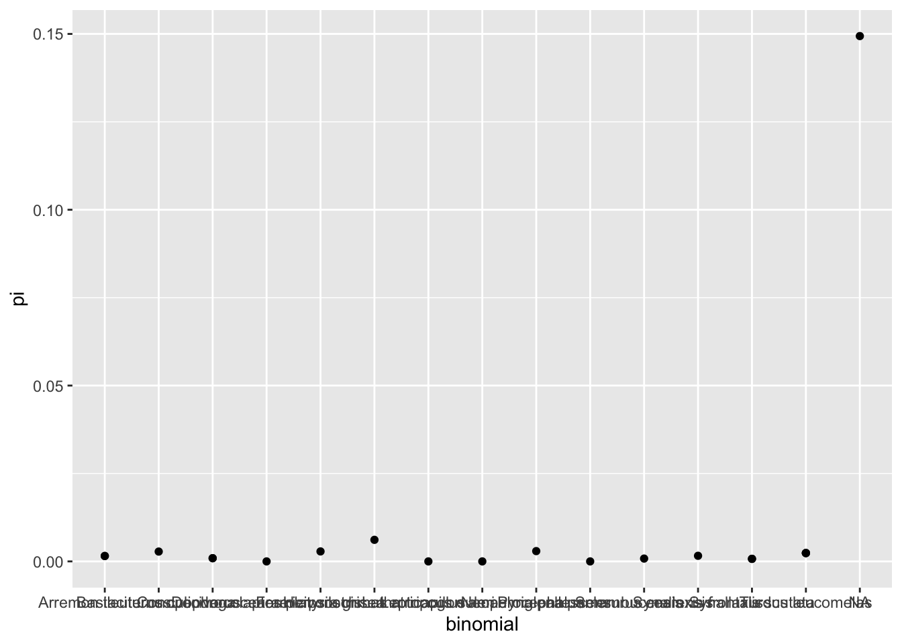
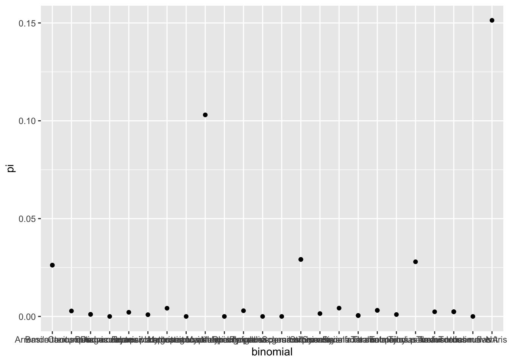

library(tidyverse)Aligning bird COI data
Intro
This document will go through steps by steps on how to import non-aligned sequences in the fasta format, organize them by species and locality based on a separate spreadsheet, and utilizing that dataset for calculation of genetic diversity.
At this point, you should have one or more fasta files exported from Geneious of the amplified COI sequences for the bird samples we’ll be working with. The code below will go through reading those sequences into R and organizing them based on the species and locality.
Note: it is a nice exercise to first load all your fasta files into MEGA and align them to quickly check for any major issues. For instance, if any samples was exported
3' –> 5', instead of the usual5' -> 3', you can quickly notice that and fix it using MEGA. You won’t be able to visualize all the alignments in R.
Step 1. Importing DNA sequences
Before starting any pipeline in R (or in anything in life, actually), we should have clear in our minds what is our final goal. Here, our final goal in order to perform the alignment is to have a single table where we have the sample code, the island that sample came from, the species to which that sample belongs, and its DNA sequence. With that table, we can split sequences per island per species, since we want the genetic diversity per island per species, and then perform the alignment and calculation of genetic diversity
Our fasta files already have the codes and the sequences. The information on island and species names is in our mastersheet that tracks all our labwork. Therefore, we need to import both (sequence and mastersheet) and merge their info.
We will first import the DNA sequences from fasta files. As you know, fasta files follow a structure where you first have the sample name in a line that starts with >, and then the next line is the DNA sequence for that sample. This is not in a table format, where sample name is in one column and DNA sequence is in another column. So we need to make it a table first.
Most of our data organization and management (something we usually call data wrangling) will be done using the package tidyverse. So, we first load this package:
tidyverse is a collection of several packages with many useful functions to manipulate data. To read the fasta files, we will make use of the function read_lines(). This function will get any plain text file and read each line as a different row.
Because we have many different fasta files (from different plates and different people analyzing it), we need to read all those files and merge them into one object. Thankfully, the function read_lines() already does this for us if we provide a list of all the files it needs to read. To create that list, we will use the function list.files(). This function goes into a folder you specify and returns a list of all the files in it. We will use the option full.names = T, so the list of files contains the entire path of the directory (e.g., data/bird/fasta/role.fasta, etc), instead of just the name of the files.
To make things easier, we will use the pipe function in R, which is represented by the simple %>%. This function basically grabs whatever is in the left and throws into the function in the right as the first argument. So, here, we are using the function list.files(), and then the list of files that comes out of it we immediately apply to read_lines() and save all that to an object named fasta.
fasta <- list.files('data/bird/fasta/',full.names = T) %>% read_lines()We can use the function
View()to visualize the thefastaobject in a different tab. That will let us confirm that the files were read correctly.
This object is still not in the format we need: instead of having a column with sample code and another with the sequence, we have it all intercalated in one column. We can use some tidyverse functions to separate them.
First, let’s transform the fasta object in a table, using the function tibble(). That will make it easier for us to select rows and columns. Because using the tibble() function creates a column where the name equals a dot ., we will change that to make it easier to use that column in the future. We will use the function rename() for that. This function requires you to say the new name of the column in the following format: NEW_NAME = 'OLD_NAME'. So we will just say data = '.', meaning the new name for . will be data.
fasta <- fasta %>% tibble() %>% rename(data = '.')Now, we will use that column to filter only the rows that contain the symbol >. That will give us only the sample codes, since codes are only in the lines with that symbol. To check if the row in column data has that symbol, we will use the function str_detect. This function requires you to say the column name + the character you wanna detect.
code <- fasta %>% filter(str_detect(data,'>'))A quick look at code will show you that the sample codes came along with the > symbol. This will be an issue when we try to find the sample information: we need to look up the codes, but if we ask R to look up these codes in our labwork spreadsheet, it won’t find any match because the symbol > is not present in our spreadsheet. Therefore, we need to remove it.
A good function to do so is the function mutate(). This function will modify existing columns or create new columns. All you have to do is give the name of the column and say how you wanna modify it. Here, we need to find a way to replace the symbol > with nothing (i.e., no characters) in all rows of column data. We can use the function str_replace() for that job. This function needs to know the pattern you want to replace (which is >), what you wanna replace it with (which should be '') and where to find the elements to replace.
Finally, let’s rename the column data again, to match the information it has: sample code
code <- code %>% mutate(data = str_replace(data,pattern = '>',replacement = '')) %>% rename(code = 'data')NOTE: We could further condensed th previous two lines in just one line, like this:
code <- fasta %>% filter(str_detect(data,'>')) %>% mutate(data = str_replace(data,pattern = '>',replacement = '')) %>% rename(code = 'data')
Now, we just need to do the same but to retrieve the rows that DO NOT have the symbol >. To do that, we can use the exact same code as above and add an ! right before the condition in the filter() function. This way, we are telling R to retrieving everything that DOES NOT match the condition (i.e., everything that does not have the symbol >). Also, this time we do not need to use mutate() with str_replace() because the symbol > is not a problem anymore.
sequence <- fasta %>% filter(!str_detect(data,'>')) %>% rename(sequence = 'data')If we check both our objects, you will notice they have the same number of rows, one of them having the codes and the other one having the sequences. Because they were in order in the original file, they are also in order here. So all we need to do is to merge them into a table using the function tibble(). We will call this table coi_data because this is already the beginning of the final table we have for our goal.
coi_data <- tibble(code,sequence)Take a quick look at the object.
Step 2. Importing sample information
Notice that we are halfway with our final goal: we have the code and sequences, now we need the island and species information. For that, we will import the spreadshet we use to keep track of our samples. This spreadsheet has all the information of our samples, and we will match that information to our sequences based on the code.
We downloaded our spreadsheet from Google Sheets in the CSV format and then renamed it to bird_specimens. Finally, we uploaded it to this project in the cloud (location data/bird/). We can then use one of the tidyverse function, read_csv(), to import the spreadsheet. We will for now save it to an object called info (we are trying to keep our object names short just so we can type it out faster)
info <- read_csv('data/bird/bird_specimens.csv')If we call this object, we get a shortened view of the content in the spreadsheet. We can use that to check if everything looks okay…
info# A tibble: 286 × 30
museum box loc_box tissue island longitude latitude type code binomial
<chr> <chr> <chr> <chr> <chr> <dbl> <dbl> <chr> <chr> <chr>
1 lebi role-fi… A1 B001 arari… -39.3 -7.37 musc… RB1 Synalla…
2 lebi role-fi… B1 B013 arari… -39.3 -7.37 musc… RB10 Cnemotr…
3 lebi role-fi… C1 B137 ubaja… -40.9 -3.84 <NA> RB100 Synalla…
4 CAHZ role-lo… A1 TCAHZ… areia -35.7 -6.97 <NA> RB143 Basileu…
5 lebi role-fi… C3 B141 ubaja… -40.9 -3.84 <NA> RB102 Pheugop…
6 lebi role-fi… C4 B142 ubaja… -40.9 -3.84 <NA> RB103 Taraba …
7 lebi role-fi… C5 B146 ubaja… -40.9 -3.84 <NA> RB104 Pheugop…
8 lebi role-fi… C6 B148 ubaja… -40.9 -3.84 <NA> RB105 Synalla…
9 lebi role-fi… C7 B154 batur… -38.9 -4.26 musc… RB106 Arremon…
10 lebi role-fi… C8 B156 batur… -38.9 -4.26 <NA> RB107 Sclerur…
# ℹ 276 more rows
# ℹ 20 more variables: Notes <chr>, person <chr>, next_step <chr>,
# total_dna_amount <dbl>, extr_date_dna1 <chr>, dna1_qubit_date <date>,
# `dna_1_ng/µl` <dbl>, dna_1_tot_µl <dbl>, dna_1_gel <chr>,
# dna_1_gelfile <chr>, dna_1_loc <chr>, gel_ext_notes <chr>,
# extr_date_dna2 <chr>, reextr_loc <chr>, pcr_date <chr>, pcr_date_2 <chr>,
# pcr_gelfile <chr>, pcr_gelfile_2 <chr>, loc_in_box <chr>, ……or we can use the function glimpse() to take a look at all the columns in the spreadsheet, so we can make sure everything is correct.
glimpse(info)Rows: 286
Columns: 30
$ museum <chr> "lebi", "lebi", "lebi", "CAHZ", "lebi", "lebi", "lebi…
$ box <chr> "role-field-1", "role-field-1", "role-field-2", "role…
$ loc_box <chr> "A1", "B1", "C1", "A1", "C3", "C4", "C5", "C6", "C7",…
$ tissue <chr> "B001", "B013", "B137", "TCAHZ00001", "B141", "B142",…
$ island <chr> "araripe", "araripe", "ubajara", "areia", "ubajara", …
$ longitude <dbl> -39.31042, -39.31042, -40.89817, -35.74550, -40.89817…
$ latitude <dbl> -7.366410, -7.366410, -3.839450, -6.968616, -3.839450…
$ type <chr> "muscle", "muscle", NA, NA, NA, NA, NA, NA, "muscle",…
$ code <chr> "RB1", "RB10", "RB100", "RB143", "RB102", "RB103", "R…
$ binomial <chr> "Synallaxis scutata", "Cnemotriccus fuscatus", "Synal…
$ Notes <chr> "no band in pcr", "no band in pcr", NA, NA, NA, NA, "…
$ person <chr> "Sophia", "Sophia", "Sophia", "Crystal", "Sophia", "S…
$ next_step <chr> NA, NA, "sequencing", "rePCR", "sequencing", "sequenc…
$ total_dna_amount <dbl> 3864.0, 15532.0, 0.0, 0.0, 0.0, 0.0, 0.0, 0.0, 0.0, 0…
$ extr_date_dna1 <chr> "2023-10-10", "2023-10-18", NA, "2024-02-14", NA, NA,…
$ dna1_qubit_date <date> 2023-10-17, 2013-10-20, NA, NA, NA, NA, NA, NA, NA, …
$ `dna_1_ng/µl` <dbl> 84.0, 353.0, NA, NA, NA, NA, NA, NA, NA, NA, NA, NA, …
$ dna_1_tot_µl <dbl> 46, 44, NA, NA, NA, NA, NA, NA, NA, NA, NA, NA, 44, N…
$ dna_1_gel <chr> "2023-10-13", "2023-10-20", NA, NA, NA, NA, NA, NA, "…
$ dna_1_gelfile <chr> "03-05-2024_ext_sh", "03-05-2024_ext_sh", NA, "2024-0…
$ dna_1_loc <chr> "role-dna-1_A1", "role-dna-1_A5", "role-dna-1_H9", "r…
$ gel_ext_notes <chr> "band", "no band", "band", "faint band", "no band", "…
$ extr_date_dna2 <chr> "05-08-2024", "05-08-2024", NA, NA, NA, NA, "05-14-20…
$ reextr_loc <chr> "reextr_A1", "reextr_A6", NA, NA, NA, NA, "reextr_D7"…
$ pcr_date <chr> "05-09-2024", NA, NA, "2024-05-14", NA, NA, "2024-05-…
$ pcr_date_2 <chr> NA, NA, NA, NA, NA, NA, NA, NA, NA, NA, NA, NA, NA, N…
$ pcr_gelfile <chr> NA, NA, NA, NA, NA, NA, NA, NA, "2024-04-02-cp-sh-2",…
$ pcr_gelfile_2 <chr> NA, NA, NA, NA, NA, NA, NA, NA, NA, NA, NA, NA, NA, N…
$ loc_in_box <chr> NA, NA, NA, NA, NA, NA, NA, NA, "PCR-box-1_A12", NA, …
$ sequence_quality <chr> NA, NA, "good sequence. Mathces with blast", NA, "goo…Note that we don’t need all that information present in this table. We only need the columns code, island and binomial (this last one has the species name). So we are going to use the function select() to retrieve just those columns.
Note:
select()is a function to retrieve columns by name.filter()is a function to retrieve rows, based on a condition.
In the code below, we call our object samples and then we pipe into the function select. Then, inside select, we can tell the columns we want. We will save everything to the same object, so we do info <- in the beginning.
info <- info %>% select(code,island,binomial)Take a quick look at samples to see if things worked.
Now that we have both coi_data and info objects, we will use the magic of joining in tidyverse. This join functions are very useful when we want to add info from one table to another by matching their info in a specific column, which is exactly what we want to do here. We can’t just merge the two tables because they have different number of rows and they are not in the same order. What we need R to do is to get the code of each of our sequences and then look for that code in our labwork spreadsheet and attach the info for that sample in our table. Here, we are going to use the function left_join() to do just that.
We start with coi_data and we pipe it into left_join(). In this function, we tell where is the info that we wanna look up (i.e., the info object) and we tell which column should be used to match the two tables (i.e., the column code).
coi_data <- coi_data %>% left_join(info,by='code')If we look at coi_data now, you will see that we have the original info (code and sequence) plus the new info from our labwork spreadsheet (island and species name). This is our final spreadsheet that we need to start splitting sequences per island per species.
Step 3. Splitting per island per species
Our next final goal is to have a list of species per island and their respective genetic diversity. Therefore, we need to first split all the sequences we have per island, then per species, then align within each species and finally calculate their genetic diversity.
An easy way to split tables in R is using the functions group_by() and summarize(). group_by() will create subgroups of rows in a table based on the values of specific columns. Then any operation we do on that table will be performed per group (instead of the whole table). We can use that to retrieve sequences per island per species. summarize() allows us to create a new table that is based on that grouping and has new values that is calculated from those groups.
We can start by using group_by() and telling what columns we want to use to group. Basically, we want to group by islands, and then within islands we want to group by species names.
coi_data <- coi_data %>% group_by(island,binomial)If you look at coi_data, you will notice nothing changes in our table, except that at the top of its information, we now see something that says the groups in our table. This means that our table is now grouped, and any operations will do will be performed per group. group_by() does not modify the content of your data, it just lets R know that the rows should be grouped based on the column value when we perform operations.
Now, if we use summarize(), we will modify the entire table. summarize() will keep the columns that are used for groups (i.e., island and binomial), but will delete all others and create a new column based on the info we give to it. In our case, we want our new column to have all the sequences for that island and that species. So, we can tell summarize() to create a new column from the sequence column. We use the function list() to avoid summarizing merging all the sequences of the species into one single sequence. What we want is to keep the sequences separated as two elements within that row.
coi_data <- coi_data %>% summarize(sequence = list(sequence))If you look at the table now, you will see we got exactly what we wanted. The table changed completely: our first column is our first group (island), the second column is the second group (binomial) and the third column was created by summarize and, for each row, it contains all the sequences for that species in that island. We can check those sequences by calling for the location in the table specifically. For instance, to see the sequences for the first island and species in the table (row 1), we can use:
coi_data$sequence[1][[1]]
[1] "CTTTGGCGCNTGAGCTGGAATAATTGGAACCGCCCTCAGCCTCCTTATTCGAGCCGAACTTGGACAACCAGGAACCCTACTAGGAGACGACCAAATTTACAATGTAATTGTTACTGCACATGCATTCGTCATAATCTTCTTCATAGTTATACCCATCATAATTGGCGGATTCGGCAACTGATTAGTTCCCCTAATAATTGGAGCCCCTGATATAGCATTCCCACGAATAAACAACATAAGCTTTTGACTCCTACCTCCCTCCTTCCTCCTCCTCCTAGCCTCTTCAACAGTAGAAGCAGGAGTAGGAACCGGATGAACAGTATATCCACCACTAGCCGGCAACCTAGCCCATGCCGGAGCTTCAGTAGACCTAGCTATTTTTTCCCTCCATTTAGCAGGTGTTTCCTCCATTTTAGGGGCAATTAACTTCATCACCACTGCAATCAATATAAAACCCCCAGCACTATCACAATACCAAACTCCCTTATTCGTTTGATCCGTTCTTATCACTGCCGTATTACTACTCCTCTCCCTCCCAGTTCTTGCCGCCGGCATTACAATATTACTCACAGATCGTAACCTAAACACAACATTCTTTGACCCAGCCGGAGGTGGAGACCCAATTCTGTACCAACATTTATTCTGATTCTTTGGTCACCCAGAAGT"
[2] "GGCGCATGAGCTGGAATAATTGGAACCGCCCTCAGCCTCCTTATTCGAGCCGAACTTGGACAACCAGGAACCCTACTAGGAGACGACCAAATTTACAATGTAATTGTTACTGCACATGCATTCATCATAATCTTCTTCATAGTTATACCCATCATAATTGGCGGATTCGGCAACTGATTAGTTCCCCTAATAATTGGAGCCCCTGATATAGCATTCCCACGAATAAACAACATAAGCTTTTGACTCCTACCTCCCTCTTTCCTCCTCCTCCTAGCCTCTTCAACAGTAGAAGCAGGAGTAGGAACCGGATGAACAGTATATCCACCACTAGCCGGCAACCTAGCCCATGCCGGAGCTTCAGTAGACCTAGCTATTTTTTCCCTCCATTTAGCAGGTGTTTCCTCCATTTTAGGGGCAATCAACTTCATCACCACTGCAATCAATATAAAACCCCCAGCACTATCACAATACCAAACTCCCTTATTCGTTTGATCCGTTCTTATCACTGCCGTATTACTACTCCTCTCCCTCCCAGTTCTTGCCGCCGGCATTACAATATTACTCACAGATCGTAACCTAAACACAACATTCTTTGACCCGGCCGGAGGTGGAGACCCAATTCTGTACCAACATTTATTCTGATTCTTTGGTCA" Notice this comes back as a list. You have the symbol [[1]] in the beginning showing it’s the first element of the list. And then you have two elements in that list (denoted by [1] and [2]), each element being a separate sequence for a separate individual in that species in that island.
Step 4. Alignments
Our third column (sequence) is now a column where each row has the sequences for a species in a island. We will align these sequences using the package muscle, which is also the name of the alignment algorithm. This package required our sequences to be format as a DNAStringSet object, which is a type of special object from the package Biostrings (a package to handle biological sequence data). So, first, we need to change our sequences into the DNAStringSet format.
BUT BEFORE THAT… Remember we can only calculate genetic diversity for those species where we have at least two samples per island. That is not the case for all of them. So we need to calculate how many sequences we have per species per island and filter out the ones that have just one. We can that by creating a new column that has the number of sequences for each row. We can use mutate() to create this new column (which we will call n), along with the function length() which will count how many elements I have in the column sequence, for each row.
Notice that we have to use group_by() again. That is because our table is only grouped by island right now (you can check that by inspecting the table), so if we calculate length() of sequence, it would count all sequences per island. We actually need all sequences per island AND per species.
NOTE: we have to add
[[1]]to sequence in the code below. If we don’t, we are counting how many rows we have per island per species. When we add[[1]], we are accessing the elements (i.e., sequences) inside the list (the[1],[2],etc.), and checking how many of those elements we have. Note for future self: make a diagram to help visualize this better.
coi_data <- coi_data %>% group_by(island,binomial) %>% mutate(n = length(sequence[[1]]))Now we can use filter() to keep only species with more than one sequence per island:
coi_data <- coi_data %>% filter(n > 1)Okay, so far so good (hopefully). We will now transform these sequences into DNAStringSet. The function that does that is simply called DNAStringSet() and is in the package Biostrings, so we need to load that package. We can then use mutate() again: remember it will create a new column or modify an existing column. If we give it a name of a column that exists, it will just modify the column based on its content. We can use mutate() to say that the column sequence now should be the DNAStringSet of whatever is in column sequence.
A few quirks here: 1) we need to use unlist() to transform the list into a vector when creating the DNAStringSet. This is because the function DNAStringSet() requires a vector of sequences, not a list. This is just handling the types of objects (vector vs list) to match what the function requires. The data itself does not change at all. 2) For the same reason, we need to use list() to create the list again. The function DNAStringSet returns an object of the type DNAStringSet (duh!), but we can’t save that object type directly into a table. So we transform them into a list first, which can be saved into the table. Lists are basically just general types of object that can store pretty much anything, and a very useful to organize complex data into a table
Note that we use unlist() on the sequence, then we feed that into DNAStringSet(): DNAStringSet(unlist(sequence))…
… then we wrap the result of all that into the list(): list(DNAStringSet(unlist(sequence))).
AGAIN a diagram would be awesome.
library(Biostrings)
coi_data <- coi_data %>% group_by(binomial) %>% mutate(sequence = list(DNAStringSet(unlist(sequence))))If we call coi_data, we will notice that the objects inside sequence have now changed from the type chr (a character vector) to DNAStrnS (object of type DNAStringSet). Let’s call one of those objects to visualize it:
coi_data$sequence[1][[1]]
DNAStringSet object of length 2:
width seq
[1] 666 CTTTGGCGCNTGAGCTGGAATAATTGGAACCGCC...ACATTTATTCTGATTCTTTGGTCACCCAGAAGT
[2] 653 GGCGCATGAGCTGGAATAATTGGAACCGCCCTCA...TCTGTACCAACATTTATTCTGATTCTTTGGTCAWe can see that the content is now formatted following the standards of the package Biostrings: we have the info of the width of each sequence, the sequence itself, and each base has a different color. This is the type of object we need for the alignment. Again, we can perform the alignment on each them with mutate() and the muscle() function from the muscle package. We save it to a different column called aln:
library(muscle)
coi_data <- coi_data %>% mutate(aln = list(muscle::muscle(sequence[[1]])))A quick check of the aln column shows us the sequences are now aligned:
coi_data$aln[1][[1]]
DNAMultipleAlignment with 2 rows and 666 columns
aln
[1] CTTTGGCGCNTGAGCTGGAATAATTGGAACCGCCCT...CCAACATTTATTCTGATTCTTTGGTCACCCAGAAGT
[2] ----GGCGCATGAGCTGGAATAATTGGAACCGCCCT...CCAACATTTATTCTGATTCTTTGGTCA---------Step 5. Calculating genetic diversity
This is our final step (so far…). We are going to use yet another function from another package to calculate the genetic diversity. Specifically, we are calculating the nucleotide diversity, which can be briefly defined as the average number of nucleotide differences per site between two DNA sequences, across all pairs of sequences in a population. A very handy function in the package pegas calculated this value: nuc.div(). This function requires an object of the type DNABin, a specific type of the package ape, so will use as.DNABin() to transform our DNAStringSet objects into that type before applying nuc.div().
Note: sorry for all the back and forth between packages and object types. Many popgen packages were created over the years with different data structures and (some) of them have options to convert from one to another. Data formats and converting among them is a curse of population genetics analysis that R has not yet fully solved.
Because nuc.div() returns a numeric value, we don’t need to use list() to save it to the table. Numeric vales can be directly saved to the table in R.
We call this new column pi because it is the greek letter (\(\pi\)) used to represent nucleotide diversity in population genetics.
library(pegas)
coi_data <- coi_data %>% mutate(pi = nuc.div(as.DNAbin(aln[[1]])))If we check our dataset now, we can see that we have a new column called pi with a bunch of numbers. Those are the calculated values for the metric of nucleotide diversity per species per island. This value is the basic input information for all the following analyses we will perform. With this data, we can see how much genetic diversity varies per species and per island and compare that to different datasets. We can, for instance, check if genetic diversity and abundance are correlated, ,or check if ecological traits such as body size and diet explain species abundance and their genetic diversity. We can also investigate how characteristics of the islands (such as area or connectivity) influence the distribution of the genetic diversity in the community.
Step 6. Quick visualization of genetic diversity distribution (GDD)
Just for fun, let’s finalize with a simple plot of the genetic diversity in each community. For that, we can use the package ggplot, which is part of the packages within tidyverse. All sorts of plots can be done with ggplot: here we will be doing a simple scatter plot to visualize the distribution of genetic diversity in each community.
We start by calling the function ggplot() and saying that our data is coi_data. This is the information on WHAT to plot. Then we state that our X axis should be the species name and the Y axis should be the genetic diversity for that species. We set those axes within the function aes() because these axes are information on HOW to map our data to the plot. Now we have to set the geometry that we want to use: do we want to plot points? Or do we want to plot lines? Or bars? In our case, we want a scatter plot, which is simply points, so we can close the function ggplot() and add another function (with a +) that is called geom_point().
ggplot(coi_data,aes(x=binomial,y=pi))+geom_point()
Note that we don’t have a plot per islands. At no moment we told ggplot that we wanted just the values from this island or that island. We could do so by using a function called facet_wrap(). This function will use one of the columns and make different plots, one for each value in that column. We have to tell that function what column we wannt use.
ggplot(coi_data,aes(x=binomial,y=pi))+geom_point()+
facet_wrap(~island)
Now we have four plots: one per island. This is a nice way to quickly visualize and compare the genetic diversity per island.
Usually, when plotting distributions such as the Species Abundance Distribution, we want to sort out the species in a way that we begin with the most abundance species first, on the left of the plot, and go towards the least abundance at the right end of the plot. This is because ranking the species this way gives us an important information about the community: how fast are we going from high abundance to low abundance as we move through the species? Do we have just a couple super abundant species with most species being very rare? Or do we have a more smooth decline, with many species that are fairly abundant, and some others that are somewhat rare? This information on the relative abundance of species is important because it hints on the processes that are shaping the community (i.e, shaping what species we have and how many of each we have). If I have a very uneven abundance distribution (few super abundant species dominating and many rare species), it is a sign that species are likely being filtered based on their ecological attributes, which results in few species dominating the community. Or, alternatively, it can suggest a very recent community, where a few species have begun to colonize, have no competitor and are currently dominating the population. It can also hint on an old island that is very far from the mainland, meaning very few species get to reach it. Of course, all those things can be happening simultaneously, and decoupling them based on just looking at patterns can be challenging (which is where process-explicit modeling comes in hand).
To make this ranked plot, we can use arrange…
TO BE CONTINUED